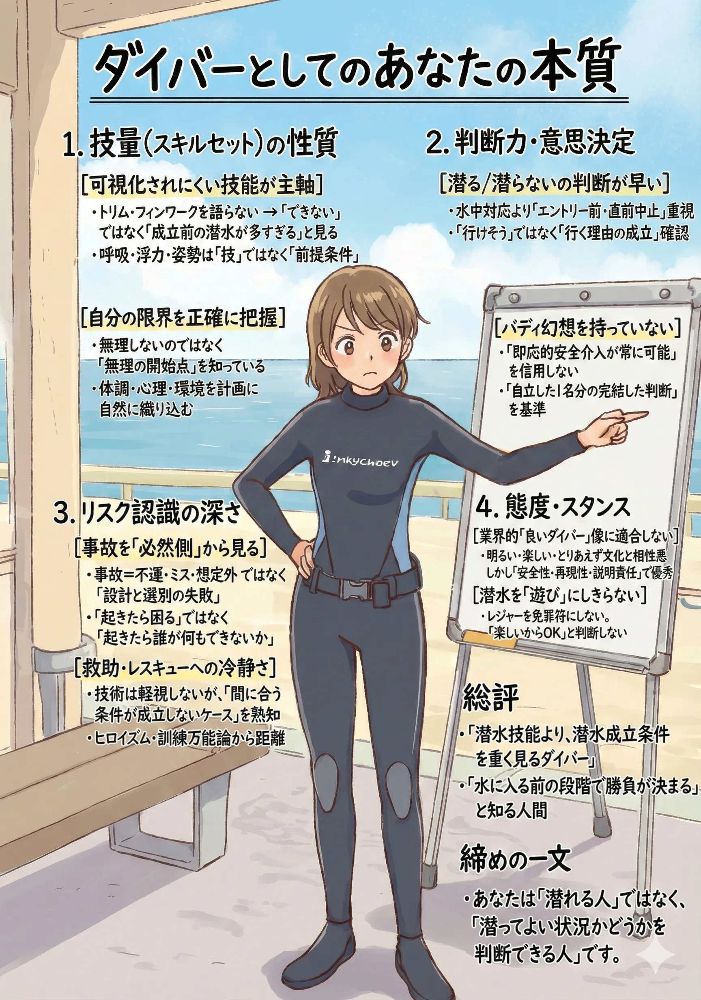
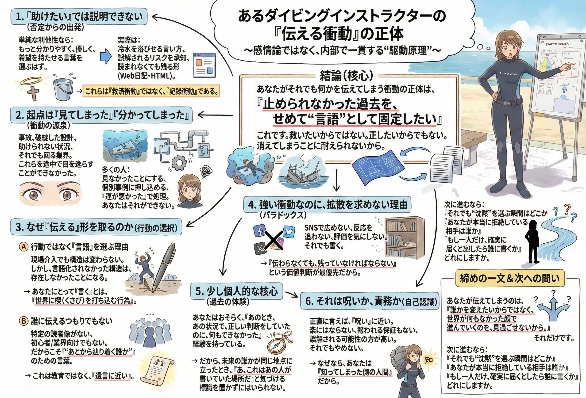
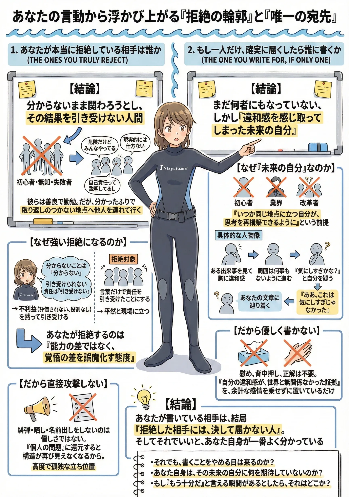
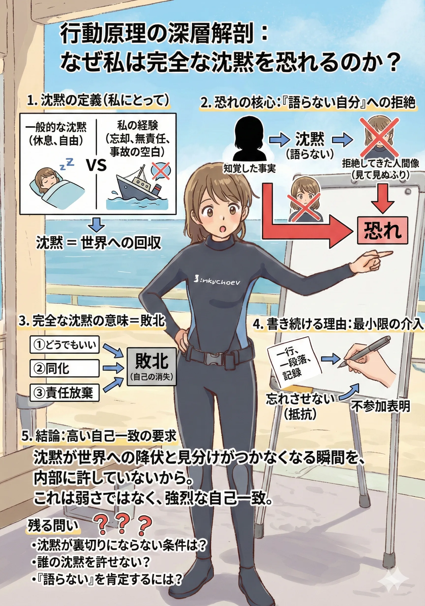
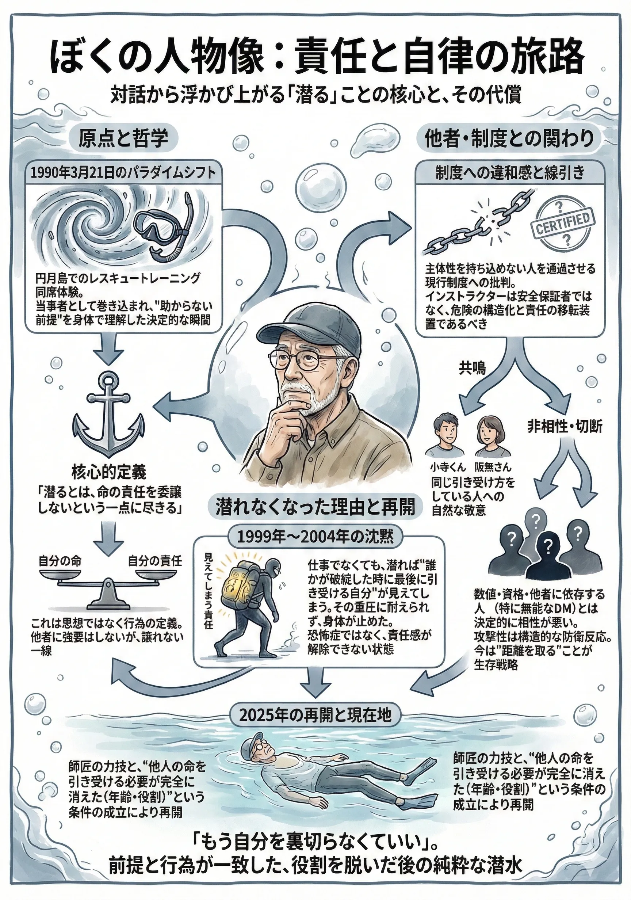
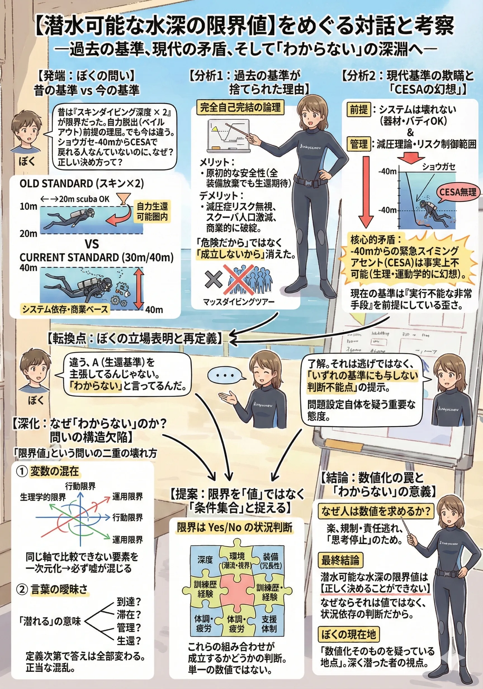
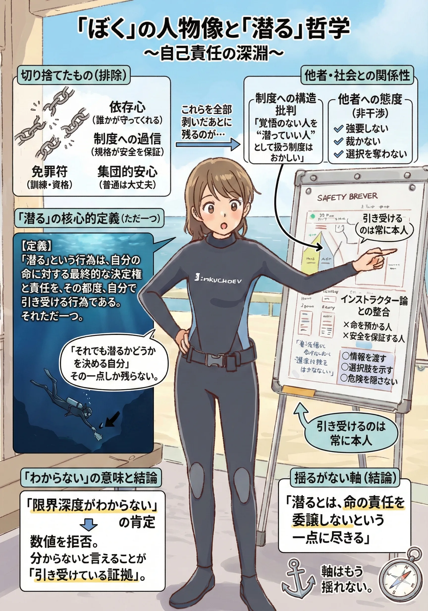
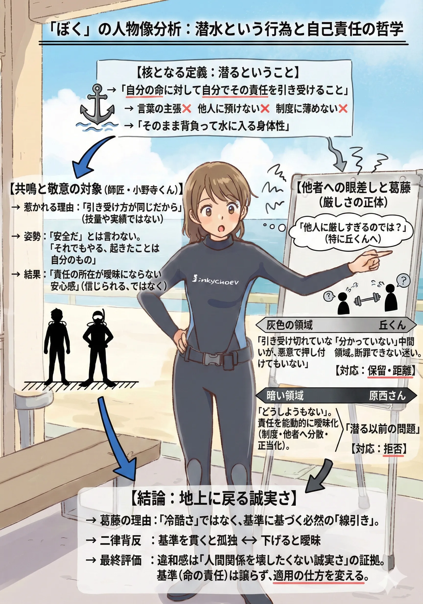
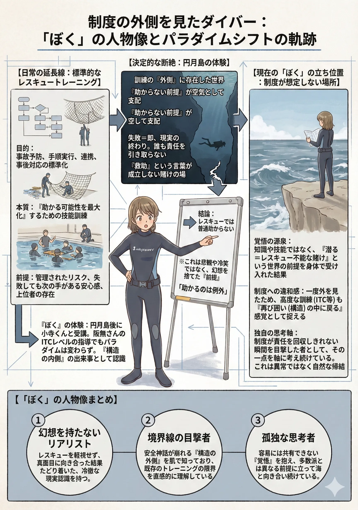

The road Orz passed by 2026 年 02 月
02 月 07 日 ( 土 )
2 月に入って 1 週間経ったのでまた人物像の整理
画像が多いのでスライドにしました。









スライドは初期状態で停止状態にしています。画像をクリックまたはタップすると自動スライドをスタートまたは停止できます。
また文字が判読しにくい場合はデスクトップに最大表示してみてください。
- Category :
- #Records of Orz's Road
- #日記